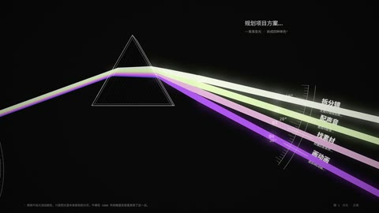

AI12类型专题 · 几何、粒子与解释
把抽象变得可见
变化规则应让观众看见关系：保持一个不变量，再改变一个量。图形越精密，越要区分视觉隐喻与事实解释。
先问这个问题
这条曲线或粒子变化解释了什么？观众能描述变化关系，还是只能说“很炫”？
适合什么内容
抽象概念、数据叙事、科学传播、音乐空间、机制演示与程序艺术。
容易失效的地方
数学符号只是装饰，动画掩盖概念跳跃；把本次外观研究当成科普内容的正确性证明。
做一次小练习
用一个自己核实过的简单关系做10秒解释：先给对象、再演示单一变化、最后显示结论。记录哪一层只是装饰。
用观察表复盘 →